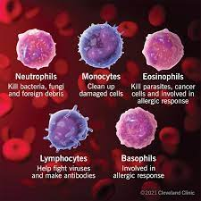

WHITE BLOOD CELL

White blood cells or leukocytes, are cells of the immune system involved in defending the body against both infectious disease and foreign materials. They are produced and derived from multipotent cells in the bone marrow known as a hematopoietic stem cells. Leukocytes are found throughout the body, including the blood and lymphatic system. There are a variety of types of white bloods cells that serve specific roles in the human immune system. WBCs constitute approximately 1% of the blood volume.
White blood cells are divided into granulocytes and agranulocytes, distinguished by the presence or absence of granules in the cytoplasm. Granulocytes include basophils, eosinophils, neutrophils, and mast cells. Agranulocytes include lymphocytes and monocytes.
The condition of having too few white blood cells is leukopenia, while having too many is leukocytosis. There are individual terms for the lack or overabundance of specific types of white blood cells. The number of white blood cells in circulation is commonly increased in the incidence of infection. Many hematological cancers are based on the inappropriate production of white blood cells.